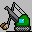
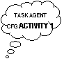

The Zeus Agent Building Toolkit |
The Application Realisation Guide |
| Contents | Introduction | Ontologies | Building Task Agents |
Utility Agents | Task Agent Configuration |
Agent Implementation |
During the previous stage, utility agent configuration, the run-time parameters of the utility agents were specified. During this stage the same process is undertaken for the application's task agents. In keeping with previous stages, this also assumes certain design decisions have been taken:
whether each agent will be linked to an external source of data
whether each agent will be linked to external programs (like a GUI front-end)
For those seeking guidance, the Role Modelling guide and its case studies provide examples of typical task agent configurations. All task agents are configured through the 'Task Agents' pane of the Code Generator window.
 To open the Code Generator tool select the Agent Generator's "Generate Code" menu option or the equivalent button from the Project Options toolbar. This will enable the developer to perform the sole activity of this stage: Configuring the Task Agents.
|  | TACF-1: Configuring the Task Agents |
Each task agents in the current project appears in the Code Generator's agent table (as shown in Figure 5.1). Shown beside its name is status, this will be either Saved - which indicates the agent has not been altered since the project was last loaded; or Modified - which indicates the agent has been modified recently and so its source code will need to be regenerated to take account of the changes.
|
| Figure 5.1: The Task Agent Configuration Panel, and how to use it |
The same status information is provided for tasks in the 'Tasks' pane, where you can also choose which tasks will be generated when the Code Generator is executed.
The Host field shows the I.P address (i.e. network location) of the machine that each task agent will run on. This defaults to the I.P address of the machine that is currently running the Generator tool. The machine resources consumed by a single agent will depend on the application, although from our experience it is perfectly reasonable to run many agents on the same host. However, agent load balancing and assessment is somewhat beyond the scope of this document.
To change the location of a Visualiser double click on the Host field and enter the new value. If you don't know the I.P address of machine, use the ping command to discover it.
Like the utility agents, the task agents need to be aware of the root ANS, and must be told where to find its DNS file. Thus the location of the DNS file should be entered into the DNS File field. If this is not a network accessible file, it will need to be copied to each task agent's local file system.
To edit the pathname from which the DNS file will be read, double click on the DNS File field.
The icon field is a cosmetic rather than a functional option; it enables the developer to choose what icon will represent the agent when the Visualiser displays it. As the Visualiser uses the icon it should be accessible from its file system - if not, it should be copied over to it. (Icons should be 256-colour GIF format images, preferably about 32 to 64 pixels in both width and breadth).
To set a task agent's icon, double click on its Icon field, this will open a file dialog window enabling the icon file to be located and chosen.
The icon locations will be placed in a file called default.gifs - this should be located in the same directory as the name server file used by each Visualiser.
How to Link an Agent to an External Resource
A task agent can obtain the resources it needs to perform its tasks from one of three sources: from its resource database, from other agents, our from an external data source. The latter can be connected to the task agent through a Java class that implements the zeus.actors.ExternalDb interface.
To connect the task agent to an external data source double click on the Database External field and enter the full package name of the appropriate class.
See also…
How to Link an Agent to an External Program
A task agent can be linked to external programs that enable it to send or receive information from the outside world. This external program will typically be a user interface from which instructions are received and to which the agent sends results. External programs are connected to the task agent through a Java class that implements the zeus.agents.ZeusExternal interface.
To connect a task agent to an external program double click on the External Program field and enter the full package name of the appropriate class.
See also…
How to Create an Agent with an Agent Viewer GUI
The Agent Viewer GUI is a specialised tool that displays detailed information on the internal components of agent. This is independent of any other application front-end and provides the best means for understanding how the agent works, as well as being an excellent debugging aid. Whether a task agent is created with this GUI is left to the discretion of the developer.
To create a task agent with an Agent Viewer GUI click the 'Create GUI?' checkbox field; or click again to deselect.
See also…
| Contents | Introduction | Ontologies | Building Task Agents |
Utility Agents | Task Agent Configuration |
Agent Implementation |